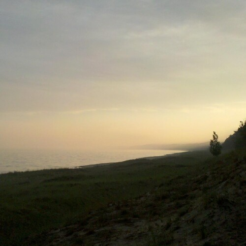

The Lighthouse

The Lighthouse
I pulled up to the gate at Ludington State Park,
it made no sense to get to the hiking sites this late, and I didn't want a camper spot, I grabbed a tent site.
I had to show the woman at the booth my Raccoon Drawings,
she loved them, and I think I had a deer in there too.
I quickly explained to her,
you need a cheap office projector, then use a photo editing program to help you find edges, and mid tones, and trace them.
I drove in circles and circles, and some crazy fog I half remember,
and finally found the tent sites, way, way, way down the road.
I setup my first, overpriced, extra light tent, and started the fire,
I had my leather jacket on, it was cold in the evening.
I was probably listening to "The Story of Philosophy" by Durant,
you have to listen to it dozens of times.
There was a family camping behind me, their boy played a guitar,
how do they do that I wondered.
They made a couple of trips for fire wood,
and we chatted a little.
I told the mom that it is really important that her boy listens to audio books,
I showed her my iPod, and how you scroll the wheel to bring up the audio books.
She asked if this is what I do,
and then pointed at my car to change the subject.
"yeah" - I said,
simply.
I waived goodbye, and got into my tent,
probably fell asleep to A Short History of Nearly Everything, Bryson is a kindred spirit.
I woke up, packed and left early in the morning,
before the family could talk to me again.
I am not sure if she waited until Christmas with buying the iPod for her boy,
I think not.
There are too many books to be read,
she set him up right after they got back, yeah she did.
I probably drove to Nordhouse for a few days,
for a change of scenery.
I don't know why people judge me to be a Yellow Buttercup Pansy,
a month after the three days that I planned to stay.
I ran into another mini-hiker who recognized from the parking lot the month before,
this was on THAT steep hill in the middle of Arrowhead Trail.
He was surprised to see me in the wilder-beast version,
with three or four fanny packs, a huge and well warn Bushcraft KA-BAR, and a dank superman shirt.
"Dood?" - He Said,
to express his surprise that I also stayed there forever.
I drove my heavy walking log into the ground and pronounced:
"Though shalt pass", for that was about all the conversation I cared to have, I was listening to Paul Strathern's Philosophy in 90 Minutes series, it is good refresher.
Anyway, It was three times the conversation that he cared to have,
but it was still kind of sad, it meant that the woods were crowded now.
I drove back home, but I didn't take the stuff out of the car,
and I really appreciated the sand being everywhere, I like beach sand.
I drove back in a couple of months, I showed the lady at the booth, some more drawings,
she asked me not to stop being an amazing artist, bless her heart.
This time I unpacked over a the hiking sites,
I think I was re-listening to A Walk in the Woods by Bryson.
Whichever book has that damn paragraph about that owl[1] swooping down,
and freeing a man of his scalp, thinking it is a fury creature, an easy mistake to make when you fly, apparently.
Gosh, squeaking with that water pump,
with the smell of my camp fire, the lake right over the dune Seth Shostack's "Search for Intelligent Life in Space" lectures playing and a nice sunset a moment before was very relaxing.
In the morning I went to search for that shipwreck site, a man with a troop of cub-scouts walked up,
and mumbled something, but I couldn't look away from his forehead - I was confused about what I was looking at.
Then he explained with a heavy heart, that the perfect sideways D on his forehead,
is from his baseball cap that he had on backwards, I nodded carefully.
But, I didn't have a poker face back them, it is a recent talent,
there is nothing I can do to remember what he was asking, but I am pretty sure I was listening to either Robinson Crusoe.
Shortly thereafter, I climbed up the dune,
put my hands on my hips and proclaimed, "it is time to go see what that little lighthouse is all about".
I put on "The Science of Superheroes", hooked my shoes to my day-pack,
and slowly begun walking the beach making plenty of stops for snacks.
It turned out there was a little apartment there,
and they rented it out to the person that worked there.
And they had a whole bunch of little knick·knacks for sale,
I stared brainlessly at a postcard of the lighthouse I was in.
I don't know what conclusion I came to in regards to the post card was,
but it certainly didn't involve wishing to make it my own.
The sunset,
was perfect that day, not a cloud in the sky.
The Lighthouse References
[1]: https://catpea.com/read/furkies-purrkies/220.html